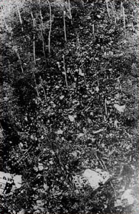
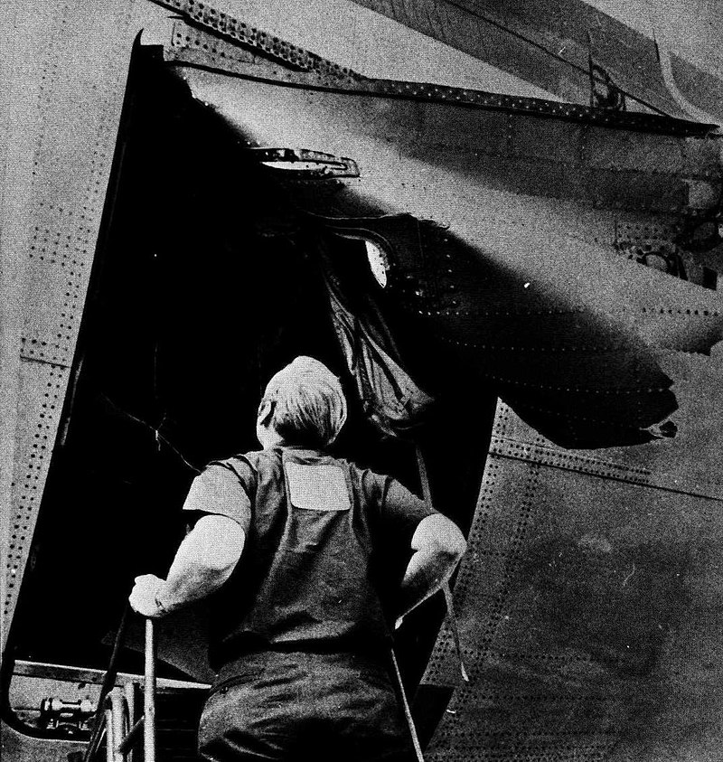

Prior to the Accident
Sunday, March 3, 1974, began as a routine day for Turkish Airlines
Flight 981. The flight, operated by a
McDonnell Douglas DC-10-10, was scheduled to depart Istanbul and make its way to London Heathrow, with a
stopover at Paris's Orly Airport to pick up additional passengers. Turkish Airlines, eager to compete in
the burgeoning international aviation market, had promoted this flight as an affordable option for
European and Asian travelers, attracting a diverse group of passengers. Among the 346 individuals
onboard were families traveling for leisure, business professionals, and even a Japanese
sports team
returning from a tournament.
The DC-10, marketed as one of the most advanced wide-body aircraft of its time, was equipped with
sophisticated avionics and a spacious cabin layout. However, the aircraft’s design also included a
hidden flaw in its cargo door locking mechanism—a defect that had caused a similar incident months
earlier but had not yet been fully addressed by the manufacturer. Flight 981's captain, Nejat Berkoz,
was a veteran pilot with decades of experience, supported by First
Officer Ömer Subay and Flight
Engineer Erdal İnanç. All three were seasoned professionals, and they carried out pre-flight
checks
meticulously, unaware of the hidden danger beneath the aircraft’s polished exterior.
The boarding process at Orly Airport was hectic but orderly, with passengers filling the aircraft to
capacity. Spirits were high as the plane took off from Paris at 12:32
PM local time. The crew and
passengers alike anticipated a smooth journey, and the DC-10 ascended gracefully into the skies above
France, cruising towards its final destination. In the cabin, travelers chatted, read magazines, and
gazed out of the windows, completely unaware of the catastrophic chain of events that was about to
unfold.
Crash
Just minutes after takeoff, as Flight 981 reached its cruising altitude, disaster struck. At
approximately 12:40 PM, a loud, deafening noise erupted from the rear of the aircraft. The rear left
cargo door, improperly secured due to the DC-10’s design flaw, tore away from the fuselage.
The
resulting rapid decompression caused a section of the cabin floor above the cargo hold to collapse,
severing critical control cables that linked the cockpit to the plane’s rear control surfaces.
With the aircraft’s controls crippled, the pilots struggled desperately to regain command, but their
efforts were in vain. The plane entered an uncontrollable descent, plummeting at an alarming rate toward
the ground. Inside the cabin, chaos reigned as passengers and crew were thrown about violently. The
oxygen masks failed to deploy in time, and panic swept through the aircraft in its final moments. At
12:41 PM, the DC-10 slammed into the Ermenonville Forest, just outside Paris, at an estimated
speed of
over 800 kilometers per hour. The impact was so severe that the aircraft disintegrated upon contact,
scattering debris over a vast area.
The crash claimed the lives of all 346 people onboard, making it
the deadliest aviation disaster in
history at the time. The aftermath left an indelible mark not only on the victims' families but also on
the global aviation industry. The quiet forest of Ermenonville became the site of unspeakable tragedy,
as rescue workers arrived to find a scene of devastation that would haunt them for years to come.

Cause
The investigation into the crash of Flight 981 revealed that the primary
cause was the catastrophic
failure of the rear left cargo door. The door, which was designed to latch mechanically and
electrically, had a critical design flaw that allowed it to appear locked even when it wasn’t fully
secure. During flight, the immense pressure difference between the cabin and the outside air caused the
door to blow off. The resulting decompression collapsed part of the cabin floor, severing essential
control cables that rendered the aircraft uncontrollable.

This flaw had been identified months earlier in a similar incident involving another DC-10, but McDonnell
Douglas, the aircraft’s manufacturer, had failed to implement sufficient corrective measures across all
aircraft. Furthermore, maintenance practices and oversight at the time allowed the issue to go unnoticed
during pre-flight inspections. Investigators also highlighted systemic issues in the aviation industry,
including insufficient regulatory enforcement and cost-cutting measures that prioritized speed and
efficiency over safety.
Aftermath
The crash of Turkish Airlines Flight 981 sent shockwaves through the global community. In its immediate
aftermath, grieving families demanded accountability, while aviation experts called for urgent reforms.
Lawsuits were filed against McDonnell Douglas and Turkish Airlines, and intense scrutiny was placed on
the regulatory bodies responsible for overseeing aircraft safety.
Within months, McDonnell Douglas issued mandatory modifications to the DC-10’s cargo door mechanism,
addressing the design flaw that had caused the crash. International aviation authorities introduced
stricter safety standards for cargo door inspections and certification processes. The tragedy also
spurred advancements in decompression-resistant aircraft designs, ensuring that future planes could
better withstand sudden pressure changes.
Legacy
The legacy of Turkish Airlines Flight 981 lies in the sweeping changes it brought to aviation safety. The
tragedy underscored the dire consequences of ignoring early warning signs and cutting corners in
aircraft manufacturing and maintenance. It served as a stark reminder of the human cost of systemic
failures and inspired a renewed commitment to passenger safety.
Today, the lessons learned from Flight 981 continue to shape the aviation industry. Modern aircraft are
subjected to far more rigorous testing and certification processes, and safety protocols have become a
cornerstone of airline operations. While the loss of 346 lives remains a solemn reminder of aviation’s
past mistakes, it has also ensured that future generations of passengers can travel with greater
confidence in the safety of the skies.